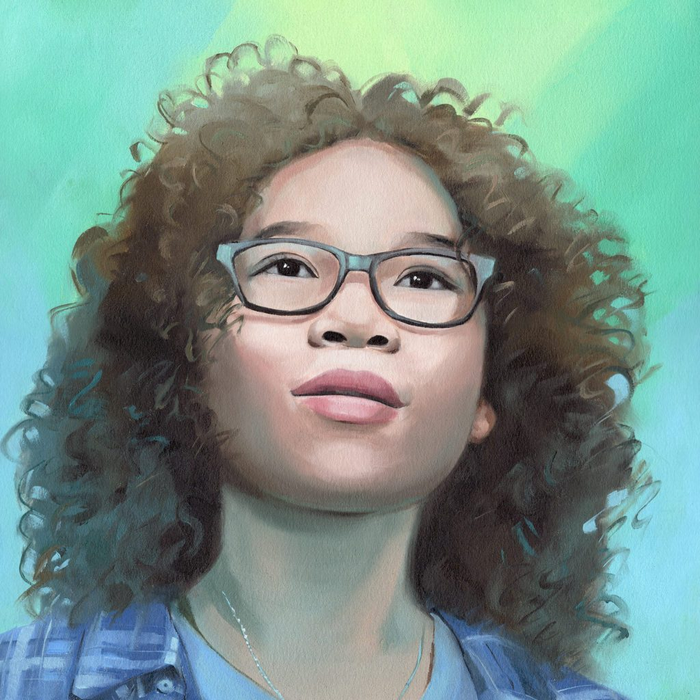
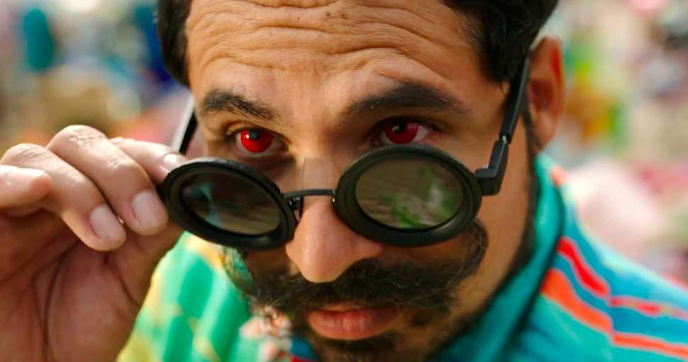
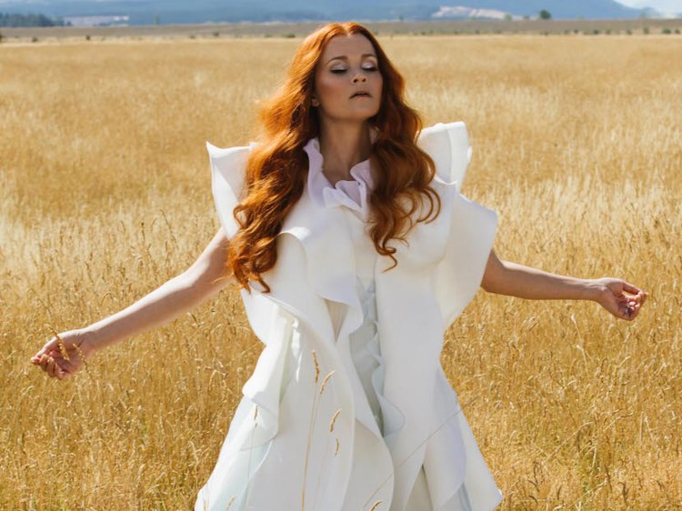

Chaeacter
Meg Murry - The book's heroine and protagonist, a homely, awkward, but loving high school student who is sent on an adventure through time and space with her brother and her friend Calvin to rescue her father from the evil force that is attempting to take over the universe. Meg's greatest faults are her anger, impatience, and lack of self-confidence, but she channels and overcomes them, ultimately emerging victorious.
Charles Wallace Murry - Meg's extraordinarily intelligent five-year-old younger brother who is capable of reading minds and understanding other creatures in a way that none of the other Murry children can.

Calvin O'Keefe - A popular boy and talented athlete in Meg's high school who accompanies the Murry children on their adventure. Calvin comes from a large family that does not really care about him, but he nonetheless demonstrates a strong capacity for love and affection, and shows a burgeoning romantic interest in Meg.

IT - The disembodied brain that controls all the inhabitants of Camazotz with its revolting, pulsing rhythm. IT, identified with the Black Thing, is the embodiment of evil on this planet.
Mrs. Whatsit - The youngest of the three celestial beings who accompany the children on their adventure. Meg initially comes to know Mrs. Whatsit as the tramp who stole bed-sheets from their neighbors and then sought shelter from a storm in the Murrys' warm kitchen. She later learns that Mrs. Whatsit gave up her existence as a star in order to fight the Dark Thing.
Mrs. Which - The oldest of the three celestial beings who accompany the children on their adventure. Mrs. Which has difficulty materializing and is usually just a shimmering gleam. Her unconventional speech is usually rendered in capitalized words, with the first consonants repeated several times.